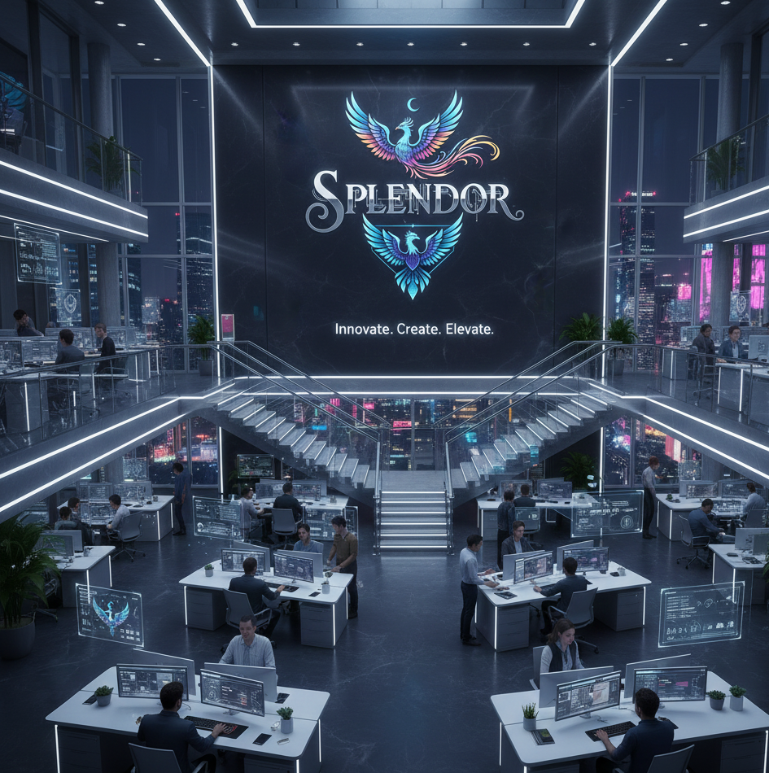

SPLENDOR
Slendor Slendor is owned by Okorowu Enyinnaya N. The company focuses on technology, including UI/UX design, graphic design, and 3D animation.
Company of Splendor Limited
.jpg)
About The CEO
Okorowu Enyinnaya
Chief Executive Officer (CEO)
Technology & Digital Innovation
Okorowu Enyinnay is the innovative Chief Executive Officer of Splendor, a rising tech company committed to building powerful digital solutions that shape the future of technology. With a strong background in software engineering, digital systems, and modern tech development, the CEO brings a dynamic vision to the company.
Driven by ambition and creativity, Okorowu Enyinnay is known for transforming challenges into opportunities and using technology to solve real-world problems. Their leadership has made Splendor a brand associated with quality, innovation, and forward-thinking solutions.
Leadership Vision
As the leader of Splendor, [CEO Name] believes in using technology to empower businesses and improve everyday life. Their vision is built on innovation, user-centered design, and continuous transformation.
The CEO’s leadership is centered around:
- Building smart, efficient digital products
- Creating solutions for modern businesses and individuals
- Encouraging creativity, coding skills, and tech exploration
- Driving the company toward global recognition
Achievements
- Delivered top-quality software and digital solutions
- Introduced innovative tech products to the market
- Grown into a trusted name in modern technology
- Collaborated with businesses to improve workflow and performance
- Built a team of talented developers, designers, and tech professionals
Mission of the CEO
The mission of Okorowu Enyinnay is to place Splendor at the forefront of digital innovation by creating technology that is powerful, reliable, and accessible. They aim to push boundaries, challenge outdated systems, and build a brighter tech future for all.
Okorowu Enyinnayis a visionary tech leader guiding Splendor toward excellence. With passion, expertise, and a commitment to innovation, the CEO continues to elevate the company as a powerful force in the technology world.
back